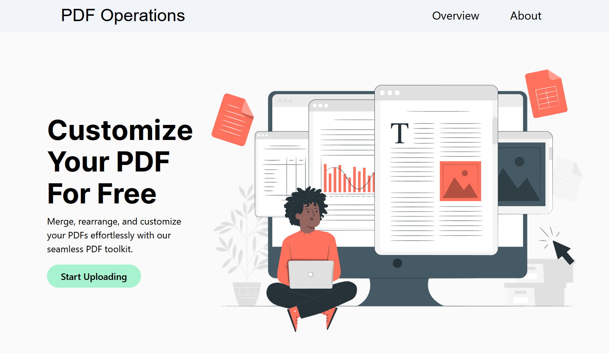
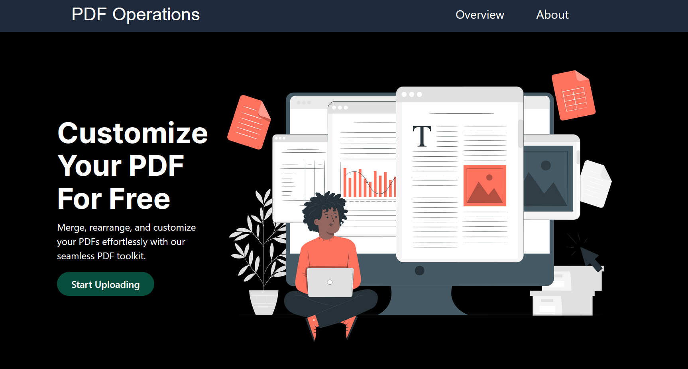
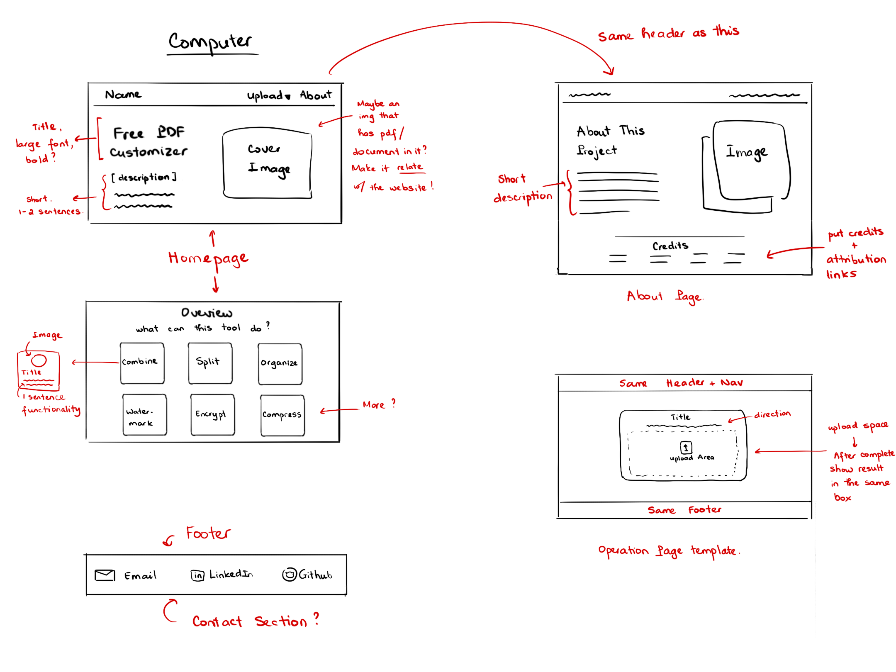
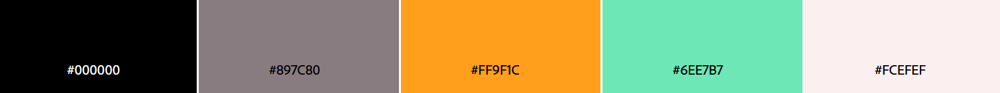

PDF Operations Website
Quick way to combine PDF, compress PDF, and more!
 Timeline
September 2023 – January 2024
Implementation Details
Programming Languages: Python (Backend), HTML, CSS, and JavaScript.
Frameworks: Django and Tailwind CSS.
Motivation
Since the pandemic, most class assignments nowadays require scanning images and combining everything into one PDF. Usually, I work on my assignments both on paper and the tablet's notebook, so I always have multiple separate PDFs and images.
I don't feel safe using the only free application because my antivirus program keeps marking them as suspicious.
I decided to make this website to help myself and my classmates quickly combine PDFs to turn in class assignments.
Goals
Develop a functional website with:
- Light and Dark mode (compatible with system preferences).
- Have at least: Combine, Compress, and Watermark functionality.
- User-friendly (both mobile and PC).
Planning
Tasks Checklist:
- UI designs
- Methods to get user input
- File conversions & merging
- File Optimization
- Output: Downloadable file
- Testing
- Documentation
- Publish
Research:
Select the Required Libraries:
- Pillow (PIL) - image handling
- PyPDF or pdf2image - PDF manipulation
- PyMuPDF - handling image
- Sortable - drag and drop objects
Resources:
Links to different resources I used:
- How to use tailwind with django
- Load static files in django
- Django compressor usage
- Example for reduce pdf size
- Encrypt and decrypt examples.
- Convert PDF to image
- Limit a certain file using accept attribute in HTML
- Limit a certain file using accept attribute in HTML
- Add additional validation on the server using django FileExtensionValidator
Design
Sketch Prototypes:
My initial sketches and drafts of how each page should look like both on mobile and PC.
PC UI Draft
Mobile UI Draft
Initial Color Scheme:
Color Scheme to Use For the Website
Default Colors From Tailwind:
Potential Colors to Use From Tailwind CSS
Final Result
The website was developed in Visual Studio Code and hosted on PythonAnywhere.
Here is the link to the website: PDF Operations